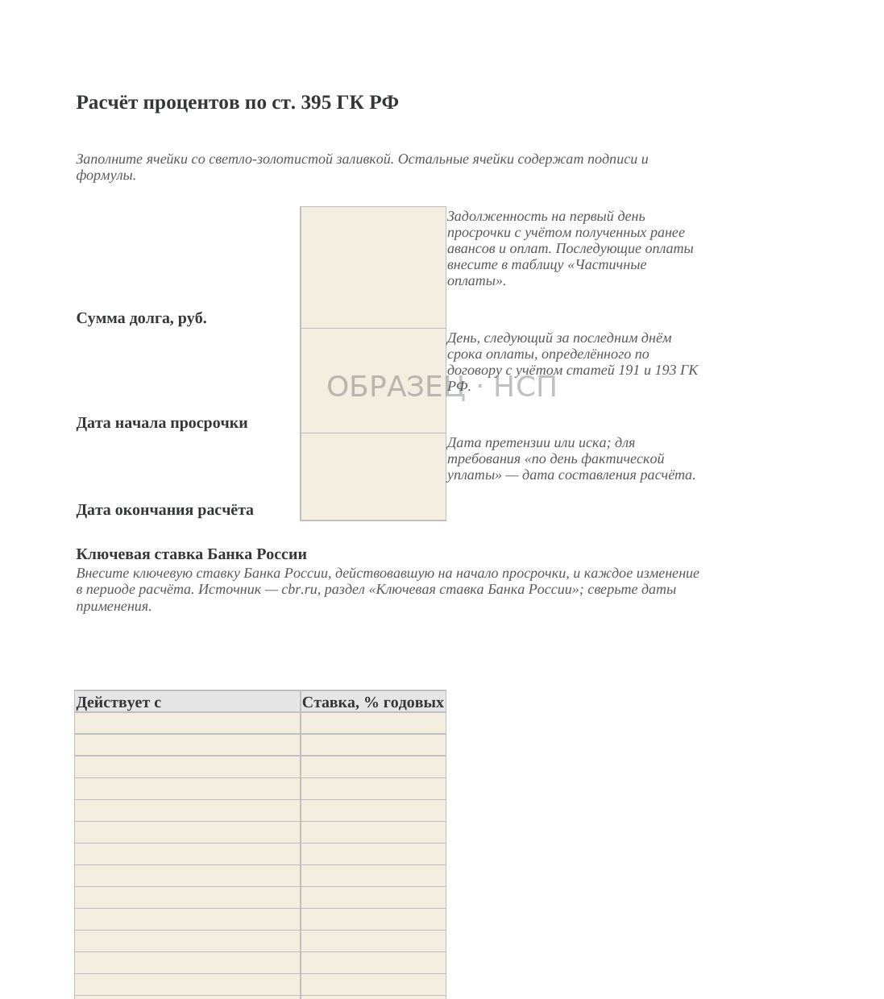

НЕОПЛАТА / РАБОТЫ ПРИНЯТЫ, ДЕНЕГ НЕТ
Заказчик не оплачивает выполненные работы: порядок действий подрядчика
Обновлено 10 ноября 2026
Работы выполнены, акты КС-2 подписаны, справки КС-3 согласованы, однако оплата от заказчика не поступает. В переговорах представители компании ссылаются на отсутствие финансирования, задержку платежей со стороны банка или необходимость дополнительных согласований.
Для подрядчика такая ситуация означает не только образование дебиторской задолженности. При отсутствии оплаты необходимо продолжать расчёты с поставщиками, выплачивать заработную плату, финансировать работы на других объектах и выполнять собственные договорные обязательства.
Взыскание задолженности следует начинать не с подготовки искового заявления, а с проверки документов и условий договора. Необходимо установить четыре обстоятельства:
- Выполнены ли договорные условия, необходимые для получения оплаты.
- Наступил ли установленный срок платежа.
- Какими документами подтверждается размер задолженности.
- Имеются ли у заказчика основания для удержаний, зачёта или отказа от оплаты.
От результатов этой проверки зависит содержание требований к заказчику и дальнейший порядок действий.
1. Определите дату возникновения просрочки
Наличие подписанных актов само по себе не всегда означает, что срок оплаты уже наступил.
Первоначально необходимо изучить положения договора, регулирующие порядок расчётов.
Особое внимание следует обратить на следующие условия.
Основание для оплаты. Договор может связывать обязанность оплатить работы с подписанием КС-2 и КС-3, получением счёта, передачей исполнительной документации либо наступлением другого предусмотренного события.
Продолжительность срока оплаты. Необходимо определить, установлен ли срок в календарных или рабочих днях. Если формулировка допускает неоднозначное толкование, это следует учитывать при расчёте задолженности.
Документы, необходимые для расчётов. В отдельных договорах оплата поставлена в зависимость от передачи полного комплекта исполнительной документации, подписания дополнительных реестров или выполнения иных обязательств подрядчика.
Промежуточные и окончательные расчёты. Следует разграничивать оплату отдельных этапов и окончательный расчёт по договору. Для них могут действовать разные сроки и условия.
Общий порядок оплаты работ регулируется статьями 711 и 746 ГК РФ. Если срок исполнения обязательства не определён или сформулирован неоднозначно, дополнительно анализируются положения статьи 314 ГК РФ и конкретные условия договора.
Практический результат проверки: подрядчик должен установить сумму каждого неоплаченного обязательства и дату, с которой соответствующий платёж считается просроченным.
Эти сведения потребуются для направления претензии, расчёта процентов и подготовки искового заявления.
2. Проверьте документы со стороны подрядчика
До предъявления финансовых требований необходимо убедиться, что подрядчик выполнил собственные обязательства, от которых зависит получение оплаты.
Проверке подлежат:
Акты КС-2 и справки КС-3. Документы должны соответствовать выполненным объёмам, условиям договора и согласованной стоимости работ. Следует проверить полномочия подписавших их представителей.
Счета на оплату. Если договор предусматривает направление счёта как условие оплаты, необходимо подтвердить факт и дату его получения заказчиком.
Исполнительная документация. Требуется установить, передан ли предусмотренный договором комплект документов и имеются ли подтверждения передачи.
Авансовые платежи. Необходимо проверить порядок зачёта ранее полученного аванса. Сумма, удержанная в соответствии с согласованным механизмом погашения аванса, не должна ошибочно включаться в задолженность.
Гарантийные удержания. Их следует учитывать отдельно от текущей задолженности. Срок возврата удержанных сумм может отличаться от срока оплаты выполненных работ.
Встречные требования заказчика. Следует заранее проанализировать начисленные штрафы, замечания по качеству, стоимость генподрядных услуг, коммунальных ресурсов и иные суммы, которые заказчик может заявить к удержанию или зачёту.
Наличие отдельных замечаний к документам не во всех случаях освобождает заказчика от оплаты. Правовое значение таких обстоятельств определяется договором, характером нарушения и применимыми нормами законодательства.
Тем не менее выявленные недостатки лучше устранить до возникновения спора.
3. Сформируйте доказательства выполнения и сдачи работ
В случае судебного разбирательства подрядчику потребуется подтвердить не только стоимость выполненных работ, но и обстоятельства их сдачи заказчику.
Основу доказательственной базы составляют:
- Договор подряда или субподряда со всеми приложениями, дополнительными соглашениями и протоколами разногласий.
- Акты КС-2 и справки КС-3.
- Документы, подтверждающие передачу актов и иной документации заказчику.
- Исполнительная документация, журналы производства работ и акты освидетельствования скрытых работ.
- Деловая переписка, имеющая отношение к выполнению, сдаче и оплате работ.
- Банковские выписки и документы о частичных платежах.
- Акты сверки взаимных расчётов при их наличии.
Отдельное значение имеют доказательства получения документов заказчиком: почтовые квитанции, описи вложения, реестры передачи, отметки уполномоченных представителей и электронные сообщения, направленные в порядке, предусмотренном договором.

Если заказчик не подписывает акты
Отсутствие подписи заказчика не всегда исключает возможность взыскания оплаты.
Статья 753 ГК РФ предусматривает оформление сдачи и приёмки результата строительных работ актом. При отказе одной из сторон от подписания в акте делается соответствующая отметка, после чего он может быть подписан другой стороной.
Однако односторонний акт не гарантирует удовлетворения требований подрядчика.
Необходимо подтвердить, что работы действительно выполнены, результат предъявлен к приёмке, а заказчик получил надлежащее уведомление и имел возможность провести приёмку.
Обоснованность отказа от подписания оценивается с учётом конкретных обстоятельств.
Поэтому при отсутствии подписанных актов особое внимание следует уделять процедуре сдачи работ и документальному подтверждению каждого её этапа.
4. Проверьте условия договора, способные повлиять на оплату
На практике значительная часть споров возникает не из-за отсутствия выполненных работ, а вследствие различного толкования сторонами порядка расчётов.
Оплата после поступления средств от вышестоящего заказчика
Договор субподряда может предусматривать оплату после получения генподрядчиком финансирования от застройщика или технического заказчика.
Правовая оценка такого условия зависит от его содержания, обстоятельств исполнения договора и применимой судебной практики.
Подрядчику необходимо определить, действительно ли срок оплаты поставлен в зависимость от указанного обстоятельства и какие последствия такое условие имеет в конкретном споре.
Само по себе сообщение генподрядчика об отсутствии финансирования не следует считать достаточным основанием для признания задолженности необоснованной.
Оплата после сдачи объекта в целом
В некоторых договорах окончательный расчёт предусмотрен после завершения строительства или приёмки всего объекта.
В такой ситуации необходимо разграничить обязательства по оплате промежуточных этапов и окончательного платежа.
Если договор предусматривает самостоятельную оплату принятых этапов, вопрос о наличии просрочки по ним рассматривается отдельно.
Зачёт встречных требований
Заказчик может заявить о зачёте начисленных штрафов, расходов на устранение недостатков или иных денежных требований.
Условия зачёта регулируются статьёй 410 ГК РФ.
Подрядчику следует проверить основание встречного требования, его размер, срок исполнения и соблюдение других условий зачёта.
При несогласии с заявленными суммами необходимо направить письменные мотивированные возражения, не ограничиваясь устными пояснениями.
Гарантийное удержание
Если договор предусматривает удержание части стоимости работ на определённый период, нужно установить согласованные условия и срок возврата этих денежных средств.
Требования по текущей задолженности и по гарантийному удержанию целесообразно рассчитывать раздельно.
Такой подход позволяет избежать предъявления требований, срок исполнения которых ещё не наступил.
5. Направьте письменное требование об оплате
После проверки договора и документов подрядчику следует зафиксировать нарушение обязательства в официальной переписке.
На первоначальном этапе можно направить уведомление о просрочке оплаты. Оно позволяет обозначить позицию подрядчика, подтвердить размер задолженности и получить письменный ответ заказчика.
В уведомлении целесообразно указать:
- Реквизиты договора.
- Перечень неоплаченных актов с датами и суммами.
- Общую сумму задолженности.
- Основание и дату возникновения просрочки.
- Требование произвести оплату или представить мотивированные письменные возражения.
- Разумный срок для ответа.
Документ необходимо направить способом, позволяющим подтвердить его содержание, дату отправки и получение адресатом, с учётом положений договора о юридически значимых сообщениях.
При этом предварительное уведомление не является обязательным самостоятельным этапом во всех случаях. Если обстоятельства требуют незамедлительного соблюдения досудебного порядка, подрядчик вправе сразу подготовить полноценную претензию.
Важнее не количество направленных писем, а их юридическое содержание и наличие доказательств отправки.

6. Подготовьте досудебную претензию
Если задолженность не погашена, подрядчику необходимо перейти к претензионному порядку.
По общему правилу для денежных требований, возникающих из гражданско-правовых договоров, часть 5 статьи 4 АПК РФ предусматривает обращение в арбитражный суд по истечении 30 календарных дней со дня направления претензии, если иной срок или порядок не установлен законом либо договором.
Претензия должна содержать конкретное требование об исполнении денежного обязательства.
Рекомендуемая структура документа:
Основание возникновения задолженности. Указываются договор, выполненные работы, подписанные акты и документы, подтверждающие их передачу.
Расчёт основного долга. Желательно приводить задолженность отдельно по каждому акту с учётом произведённых платежей и согласованных удержаний.
Дата возникновения просрочки. Для каждого платежа указывается срок исполнения соответствующего обязательства.
Расчёт дополнительных требований. В зависимости от договора и закона могут предъявляться проценты по статье 395 ГК РФ либо договорная неустойка. Возможность их совместного взыскания требует отдельной правовой оценки.
Требование об оплате. Указываются итоговая сумма, банковские реквизиты и срок исполнения.
Предупреждение об обращении в суд. Заказчик уведомляется о намерении взыскать задолженность в судебном порядке при отсутствии оплаты.
К претензии прилагаются необходимые документы и расчёты.
Следует сохранить её подписанный экземпляр и подтверждение надлежащего направления.

Как рассчитать проценты за просрочку
При применении статьи 395 ГК РФ расчёт производится с учётом ключевой ставки Банка России, действовавшей в соответствующие периоды, если иной размер процентов не установлен законом или договором.
Если в период просрочки менялась ставка или заказчик частично погашал задолженность, расчёт необходимо разбить на соответствующие интервалы.
Отдельно следует проверить начало и окончание периода начисления процентов.
Ошибки в датах, суммах частичных платежей и применённых ставках могут привести к необходимости перерасчёта требований.

7. Что делать, если задолженность продолжает увеличиваться
При длительной задержке оплаты подрядчику необходимо оценивать не только перспективы взыскания уже возникшей задолженности, но и последствия дальнейшего исполнения договора.
Приостановление работ
При наличии предусмотренных законом оснований подрядчик может рассматривать вопрос о приостановлении исполнения своих обязательств.
Правовое значение имеют статьи 328 и 719 ГК РФ, характер нарушения со стороны заказчика и положения конкретного договора.
Прежде чем приостанавливать работы, необходимо проверить наличие законных оснований и соблюсти применимый порядок уведомления.
Неоформленное прекращение работ способно создать дополнительные риски: заказчик может предъявить требования, связанные с нарушением сроков строительства.
Контроль платёжеспособности заказчика
При существенной задолженности целесообразно проверить:
- Наличие судебных споров с участием заказчика.
- Исполнительные производства.
- Сведения о банкротстве.
- Публикации о финансовом состоянии и корпоративных изменениях контрагента.
Для этого используются открытые официальные источники, в том числе Картотека арбитражных дел, ФССП и реестры сведений о банкротстве.
При возбуждении дела о банкротстве порядок предъявления требований может существенно измениться. Необходимо определить характер задолженности и применимую процедуру её взыскания.
Контроль сроков исковой давности
Общий срок исковой давности установлен статьёй 196 ГК РФ, а начало его течения определяется с учётом статьи 200 ГК РФ.
Переписка с обещаниями произвести оплату сама по себе не гарантирует изменения срока исковой давности.
При этом действия должника, свидетельствующие о признании задолженности, при предусмотренных законом условиях могут повлечь перерыв течения срока исковой давности по статье 203 ГК РФ.
Поэтому документальное оформление признания долга имеет самостоятельное значение.
8. Когда необходимо привлекать юриста
Стандартная претензионная работа может выполняться сотрудниками подрядной организации при наличии правильно подготовленных документов.
Однако ряд обстоятельств требует индивидуального юридического анализа:
- Заказчик оспаривает объёмы или качество выполненных работ.
- Акты не подписаны либо полномочия подписавших их представителей вызывают сомнения.
- Заявлены существенные встречные требования, штрафы или удержания.
- В договоре имеются неоднозначные условия наступления срока оплаты.
- Заказчик находится в процедуре банкротства.
- Спор связан с государственным или корпоративным контрактом со специальным регулированием.
- Размер задолженности создаёт существенный риск для финансовой устойчивости подрядчика.
В таких ситуациях недостаточно использовать типовой образец претензии. Необходимо оценивать всю совокупность договорных условий, доказательств и возможных возражений заказчика.
9. Практический порядок действий подрядчика
При выявлении неоплаченных выполненных работ последовательность действий может быть следующей.
Первый этап — проверка обязательств. Определить, какие работы приняты, какие суммы подлежат оплате и когда наступил срок каждого платежа.
Второй этап — формирование доказательств. Проверить договор, КС-2, КС-3, исполнительную документацию, расчёты и подтверждения передачи документов.
Третий этап — письменное требование. Направить уведомление об оплате или непосредственно досудебную претензию, в зависимости от обстоятельств.
Четвёртый этап — расчёт требований. Установить размер основного долга, оценить возможность начисления процентов или неустойки, учесть частичные платежи и удержания.
Пятый этап — подготовка к взысканию. При отсутствии оплаты проверить соблюдение досудебного порядка, оценить платёжеспособность заказчика и подготовить материалы для судебной защиты.
Последовательное документирование каждого этапа позволяет подрядчику обосновать свою позицию и сократить риск процессуальных ошибок.
Документы для работы с задолженностью
Для самостоятельной организации претензионной работы на сайте «На стороне подрядчика» представлен комплект «Получение оплаты за выполненные работы».
Он содержит 18 файлов: формы КС-2 и КС-3, документы для оформления сдачи работ, уведомление о просрочке, претензию, Excel-расчёт процентов по статье 395 ГК РФ, порядок действий и материалы для судебного взыскания.
Документы не гарантируют погашение задолженности и не заменяют юридическое сопровождение сложного спора. Их назначение — помочь подрядчику подготовить необходимые материалы, провести расчёты и соблюсти предусмотренную последовательность действий.
Изучить состав комплекта «Получение оплаты за выполненные работы»
Главный вывод
При задержке оплаты выполненных строительных работ первостепенное значение имеют не количество обращений к заказчику, а содержание договора, соблюдение процедуры сдачи работ и доказательства возникновения задолженности.
Чем раньше подрядчик установит дату просрочки, проверит комплект документов и оформит требования письменно, тем более обоснованной будет его позиция при дальнейшем взыскании.
КОМПЛЕКТ ДОКУМЕНТОВ
Получение оплаты за выполненные работы
18 файлов: КС-2, КС-3, подтверждение сдачи работ, уведомление о просрочке, претензия, расчёт процентов в Excel и материалы для судебного взыскания. Состав комплекта представлен на странице товара.
29 900 ₽
Посмотреть состав комплектаБЕСПЛАТНО, ЗА EMAIL
КС подписаны, денег нет: первые 7 проверок
С этого начинают, пока переписка ещё не началась: алгоритм проверки своих документов, калькулятор срока оплаты, перечень документов для претензии и заготовка первого письма заказчику.
- Алгоритм первичной проверки
- Калькулятор срока оплаты
- Перечень документов для претензии
- Шаблон первого письма заказчику